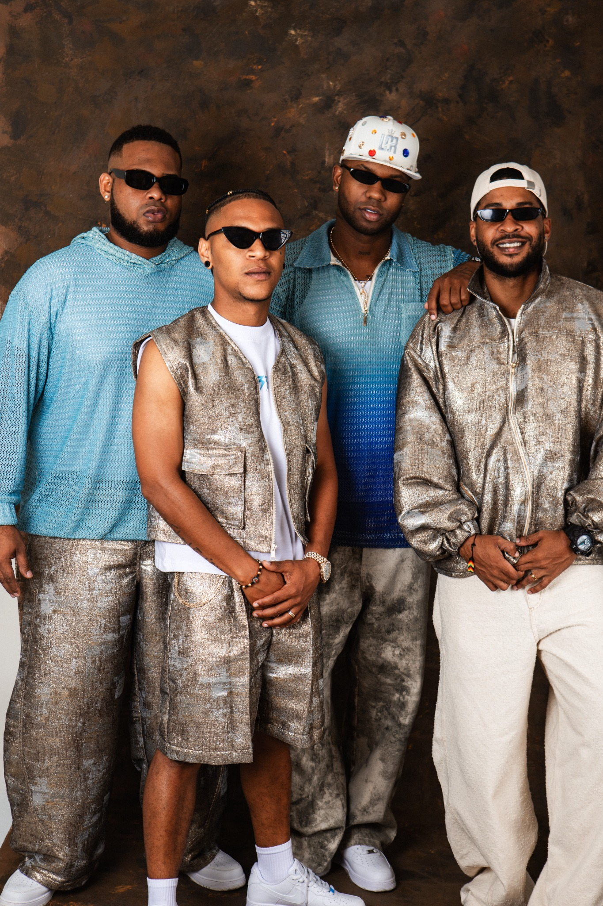

Familia
Fotos cercanas que muestran unión, frescura y actitud de colectivo musical.
Sitio oficial
Una página web para presentar la música, la imagen, la comunidad y el universo visual de Los Dioses del Ritmo. Esta versión integra una galería renovada con fotografías de estudio, instrumentos y retratos para darle mayor fuerza artística al proyecto.

Integrantes
Videos integrados
Redes oficiales
Sabor chocoano
Fotos cercanas que muestran unión, frescura y actitud de colectivo musical.

El saxofón, la trompeta y la producción digital refuerzan el carácter musical del proyecto.

Una estética urbana que combina moda, baile, color y presencia escénica.
Spotify oficial
Reproductor conectado directamente con Spotify para escuchar las canciones principales de Los Dioses Del Ritmo sin salir del sitio.
Integra el perfil oficial del artista, sus canciones más escuchadas y sus lanzamientos recientes en una experiencia visual inspirada en el reproductor de referencia.
Enlaces oficiales
Accesos directos a la página de enlaces de la agrupación y al perfil del programa Pacífico Master Beat.
“Del Chocó para el mundo.”
El sitio combina fotografía, video, tienda, comunidad y narrativa cultural para funcionar como proyecto social universitario y como página oficial de una agrupación musical.